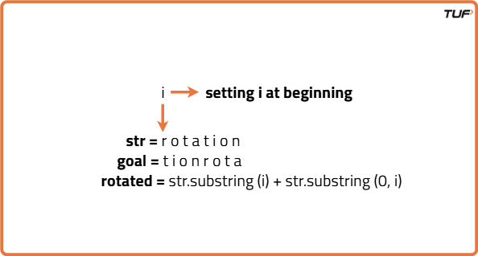
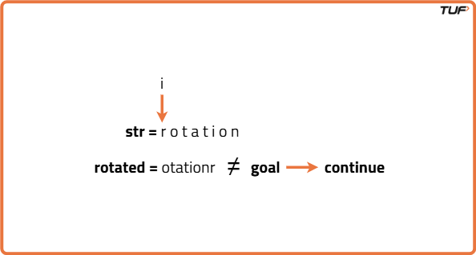
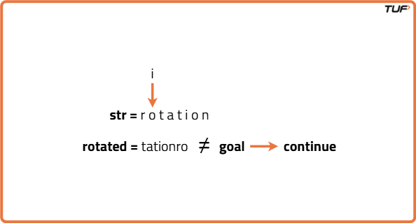
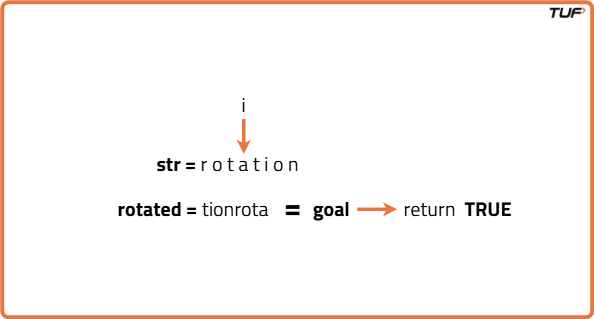
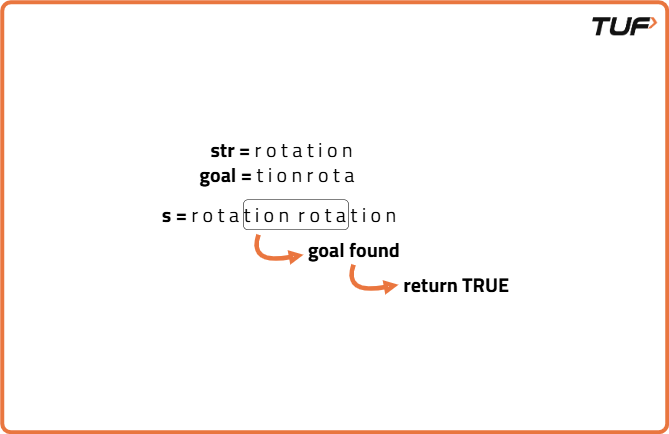

Check if one string is rotation of another
Problem Statement: Given two strings s and goal, return true if and only if s can become goal after some number of shifts on s. A shift on s consists of moving the leftmost character of s to the rightmost position. For example, if s = "abcde", then it will be "bcdea" after one shift.
Examples
Example 1:
Input: s = "rotation", goal = "tionrota"
Output: true
Explanation: After multiple left shifts on "rotation", we get:
1st shift → "otationr"
2nd shift → "tationro"
3rd shift → "ationrot"
4th shift → "tionrota"
So the goal string can be obtained by rotating the original string.
Example 2:
Input: s = "hello", goal = "lohelx"
Output: false
Explanation:
Even after all possible rotations of "hello", we cannot form "lohelx" due to the presence of an extra character 'x'. Hence, it's not possible.
Disclaimer: Here is the practice link to help you assess your knowledge better. It's highly recommend trying to solve it before looking at the solution.
Brute Force
Algorithm
- Start by generating all possible left rotations of the original string using substring slicing and concatenation.
- For each rotated version of the string, compare it with the target (goal) string.
- If a match is found at any point, return
trueimmediately as the goal can be achieved. - If none of the rotations match the goal string after checking all possibilities, return
false.




Code
#include <bits/stdc++.h>
using namespace std;
class Solution {
public:
// Check if 'goal' is a rotation of 's'
bool rotateString(string& s, string& goal) {
// Strings must be same length to be rotations of each other
if (s.length() != goal.length()) {
return false;
}
// Try all possible rotations of 's'
for (int i = 0; i < s.length(); i++) {
string rotated = s.substr(i) + s.substr(0, i);
if (rotated == goal) {
return true;
}
}
return false;
}
};
int main() {
Solution sol;
string s = "rotation";
string goal = "tionrota";
// Output the result
if (sol.rotateString(s, goal)) {
cout << "true" << endl;
} else {
cout << "false" << endl;
}
return 0;
}Complexity Analysis
Time Complexity: O(N^2) since generating N rotations and each comparison takes O(N) time.
Space Complexity: O(N) for the space needed to store each rotated string.
Optimal Approach
Algorithm
- Double the original string by joining it with itself, creating a new string like s + s.
- Look for the target string goalinside this new doubled string.
- If goal exists within the doubled string, then it's a valid rotation, return true.
- If it's not found, that means the original string cannot be rotated to match goal, return false

Code
#include <bits/stdc++.h>
using namespace std;
class Solution {
public:
// Check if goal is a rotation of s using string doubling method
bool rotateString(string& s, string& goal) {
// Strings must be the same length to be rotations of each other
if (s.length() != goal.length()) return false;
// Concatenate s with itself and check if goal exists in it
string doubledS = s + s;
return doubledS.find(goal) != string::npos;
}
};
int main() {
Solution sol;
string s = "rotation";
string goal = "tionrota";
cout << (sol.rotateString(s, goal) ? "true" : "false") << endl;
return 0;
}Complexity Analysis
Time Complexity: O(N), because checking for a substring in s + s is linear in time.
Space Complexity: O(N) for the space needed to store the concatenated string s + s.